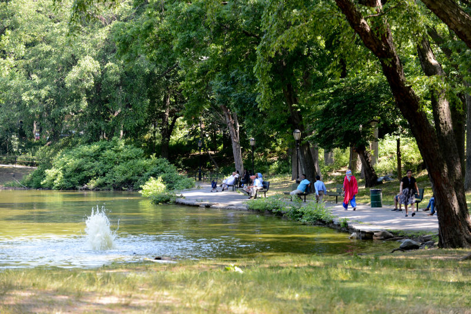

Captain Tilly Park
Quiet, serene, and somewhat hidden from the bustling neighborhood of Jamaica, Captain Tilly Park is a place where you can hear the laughter of children, see wildlife, or a quiet moment of meditation and reflection. The 9-acre park is mostly woodland, as passersby can sit or bike alongside Goose Pond and spot turtles, ducks, and fish. The park is also home to a children's play area, with game tables, swings for tots and young children, and play equipment shaped like the prow of a boat.
Highland Ave., 85 Ave. bet. 165 St. and Chapin Pkwy.
Queens